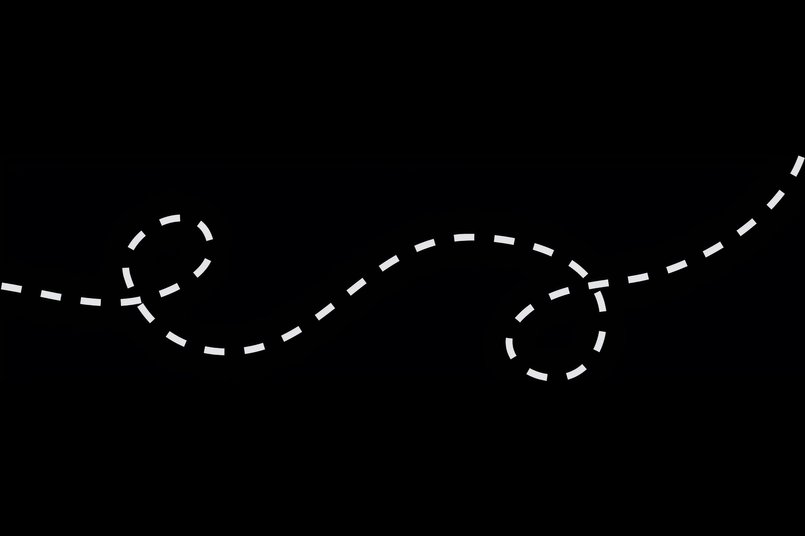
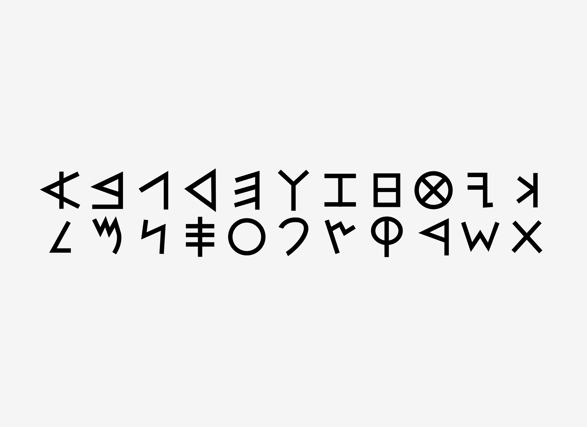
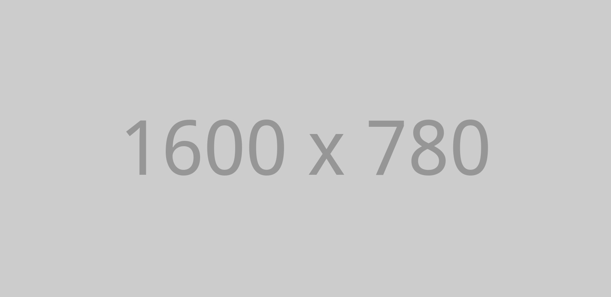

Gallery blocks have two settings: the number of columns, and whether or not images should be cropped. The default number of columns is three, and the maximum number of columns is eight.
They should show at the very top of the blog index page, even though they could be several posts back chronologically. They should still show up again in their chronologically correct postion in time, but without the sticky indicator. If you have a plugin or widget that lists popular posts or comments, make sure that this sticky post is not always at the top of those lists unless it really is popular.
Welcome to image alignment! If you recognize this post, it is because these are blocks that have been converted from the classic Markup: Image Alignment post. The best way to demonstrate the ebb and flow of the various image positioning options is to nestle them snuggly among an ocean of words. Grab a paddle and let’s get started. Be sure to try it in RTL mode. Left should stay left and right should stay right for both reading directions.
On the topic of alignment, it should be noted that users can choose from the options of None, Left, Right, and Center. If the theme has added support for align wide, images can also be wide and full width. Be sure to test this page in RTL mode.
In just a bit here, you should see the text start to wrap below the right aligned image and settle in nicely. There should still be plenty of room and everything should be sitting pretty. Yeah… Just like that. It never felt so good to be right.
The most difficult thing is the decision to act, the rest is merely tenacity. The fears are paper tigers. You can do anything you decide to do. You can act to change and control your life; and the procedure, the process is its own reward.
In addition, they also get the options of the image dimensions 25%, 50%, 75%, 100% or a set width and height.
Creeping is just not right. Images need breathing room too. Let them speak like you words. Let them do their jobs without any hassle from the text. In about one more sentence here, we’ll see that the text moves from the right of the image down below the image in seamless transition. Again, letting the do it’s thang. Mission accomplished!